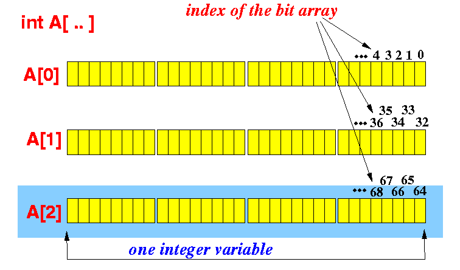
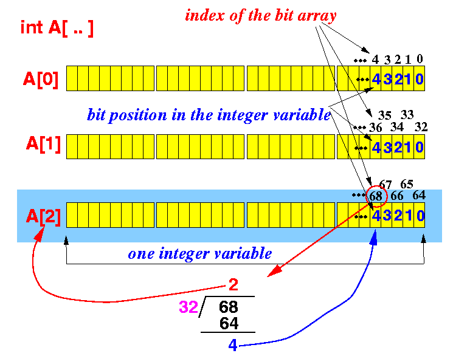

- Fact:
- The C programming language does not provide support for array of bits
However:
- The C programming language provides all the necessary operations to allow the programmer (= you) to implement an "array of bits" data structure.
- What is an array of bits:
- An array of bits A
is an array where:
- A[i] = 0 or 1
- An array of bits A
is an array where:
- Trivial
implementation:
- Use an array of int:
int A[100]; // A[i] = 0 means false, A[i] = 1 means true
- Disadvantage:
- Each int variable
is 32 bits
- We only need
1 bit to represent
true/false
- We are wasting 31/32 (96.875%) of the memory space !!!
- Each int variable
is 32 bits
- Use an array of int:
- An Efficient
implementation of
bit arrays:
- Use an array of int
(because the most cost efficient access to
memory is accessing
int sized data):

- Map the
bit array onto
the array of integer as follows:

- Mapping function:
- Element with index k in
the bit array is:
- bit position k % 32 in the
- array element with index k/32
- Element with index k in
the bit array is:
- Use an array of int
(because the most cost efficient access to
memory is accessing
int sized data):
- SetBit(A, k):
set the
kth bit
in the bit array A:
Step-by-step: int i = k/32; // i = array index (use: A[i]) int pos = k%32; // pos = bit position in A[i] unsigned int flag = 1; // flag = 0000.....00001 flag = flag << pos; // flag = 0000...010...000 (shifted k positions) A[i] = A[i] | flag; // Set the bit at the k-th position in A[i]"Professional" version:
SetBit( A[ ], k ): A[k/32] |= 1 << (k%32); // Set the bit at the k-th position in A[i]In C macro definition:
#define SetBit(A,k) ( A[(k/32)] |= (1 << (k%32)) )
- ClearBit(A, k):
clear the
kth bit
in the bit array A:
Step-by-step: int i = k/32; int pos = k%32; unsigned int flag = 1; // flag = 0000.....00001 flag = flag << pos; // flag = 0000...010...000 (shifted k positions) flag = ~flag; // flag = 1111...101..111 A[i] = A[i] & flag; // RESET the bit at the k-th position in A[i]Pro version:
ClearBit(A, k): A[k/32] &= ~(1 << (k%32));In C macro definition:
#define ClearBit(A,k) ( A[(k/32)] &= ~(1 << (k%32)) )
- TestBit(A, k):
test the
kth bit
in the bit array A:
Step-by-step: int i = k/32; int pos = k%32; unsigned int flag = 1; // flag = 0000.....00001 flag = flag << pos; // flag = 0000...010...000 (shifted k positions) if ( A[i] & flag ) // Test the bit at the k-th position in A[i] // k-th bit is 1 else // k-th bit is 0Pro version:
TestBit( A, k ): if ( (A[k/32] & (1 << (k%32) )) != 0 ) // k-th bit is 1 else // k-th bit is 0 Or: if ( (A[k/32] & (1 << (k%32) )) ) // value != 0 is "true" in C ! // k-th bit is 1 else // k-th bit is 0In C macro definition:
#define TestBit(A,k) ( A[(k/32)] & (1 << (k%32)) )
- Example Program:
(Demo above code)

- The bit manipulation macros header file: click here
- Test Prog file: click here
How to run the program:
- Right click on link and
save in a scratch directory
- To compile: gcc bit-array2.c
- To run: a.out